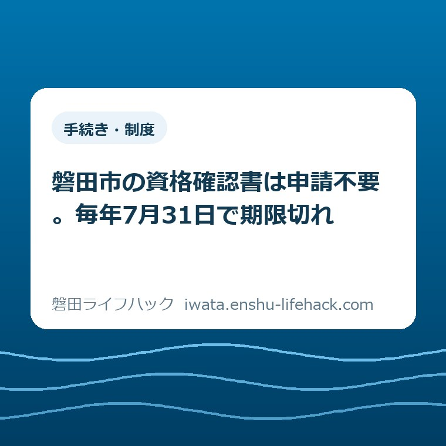

更新：2026.08.31 手続き・制度更新：2026.08.31
磐田市の資格確認書は申請不要。毎年7月31日で期限切れ

この記事の要点
Q. 磐田市の資格確認書は、いつ切れて、更新の申請は要るのですか？
A. 有効期限は毎年7月31日で、8月1日に一斉更新されます。更新の申請は要りません。磐田市が対象者を判定し、7月中に新しいものを送ります。届かないこと自体が異常とは限らず、マイナ保険証の登録状況によって、届く書類が三つに分かれます。
導入——期限のある紙なのに、更新の手続きが無い
磐田市の国民健康保険と後期高齢者医療で使う資格確認書は、有効期限が毎年7月31日です。磐田市は「資格確認書の有効期限は、毎年7月31日です」と明記しています（磐田市「国民健康保険・後期高齢者医療加入のみなさまへ」、ページ更新日2026年6月4日、2026年8月30日確認）。
そして、更新の申請は要りません。磐田市は「国民健康保険及び後期高齢者医療では、マイナ保険証利用登録の情報等に基づき、毎年8月1日に資格確認書や資格情報通知書などの更新をしています」と公表しています。対象者の判定を市の側が行い、該当する方へ7月中に送る仕組みです。
期限が書いてある書類なのに、更新の申請窓口が無い。私がこの制度でいちばん意外だと思ったのは、そこです。免許証も車検証も、期限が来れば本人が動きます。資格確認書だけは、本人が何もしないことが正しい状態になっています。
私は磐田市で不動産業をしている大石浩之（磐田市／不動産業）です。医療や保険の専門家ではありません。相続や実家じまいの相談で、親御さんの手元にある書類を家族が仕分ける場面に立ち会うことがある、という距離感です。この記事は、磐田市が公表している内容を、手元の紙をどう扱うかという段取りに置き換え直したものです。
先に断っておきます。国民健康保険の制度は、加入している人の年齢、マイナンバーカードの持ち方、世帯の構成で扱いが変わります。この記事に書けるのは磐田市が公表している一般的な枠組みまでで、ご自身がどれに当たるかは、最後に必ず市のページか窓口で確かめてください。
それでも、先に一つ言い切っておきます。有効期限が令和8年7月31日と書かれた紙を、8月1日以降に病院の窓口へ出してはいけません。期限の切れた資格確認書は、保険証としての役目を終えています。

まず、公式資料から事実を整理する——磐田市の資格確認書
資格確認書は、これまでの健康保険証の代わりになる書類です。磐田市は「『資格確認書』は今までの保険証の替わりとなるもの」であり、「医療機関や薬局などに提示することで、保険診療を受けることができます」と説明しています（2026年8月30日確認）。
紙の保険証そのものは、もう作られません。磐田市は「令和6年12月2日以降、保険証は新規発行および再発行されなくなり、マイナ保険証を基本とする仕組みに移行しました」と記しています（磐田市「資格確認書・資格情報通知書（資格情報のお知らせ）」、ページ更新日2025年11月7日）。手元の保険証が古くなっても、同じものは出てきません。
資格確認書が申請なしで届く人の区分も、磐田市が挙げています。①マイナンバーカードを持っていない方、②マイナンバーカードの電子証明書の有効期限が切れた方、③マイナンバーカードを返納した方、④DV被害などでマイナポータルや医療機関で自己情報が閲覧できない設定をしている方です。磐田市は「マイナ保険証を保有していない方…には職権で『資格確認書』を交付します」としています。
送付の時期は、国民健康保険の場合「7月中に新しい資格確認書を送付しますので、8月以降に差し替えをお願いします」と案内されています。70歳以上の方については「毎年7月中旬に『資格確認書または資格情報通知書』が送付されます」と、より早い時期が示されています。
後期高齢者医療は、区分の線の引き方が国民健康保険と違います。磐田市の案内では、85歳以上の方またはマイナ保険証を利用登録していない方に資格確認書が届き、84歳以下でマイナ保険証を利用登録している方には7月中に「資格情報のお知らせ」が送られます。年齢の線が85歳に引かれている点は、国民健康保険の70歳とは別物として覚えたほうがいい。
75歳になるときの切り替えについては、磐田市のよくある質問に「75歳のお誕生日以降は、どなたも後期高齢者医療制度に加入いただきます。お手続きの必要はありません」とあります（ページ更新日2023年3月30日）。ここも本人が動かなくてよい場面です。
なお、発送が簡易書留か普通郵便かは、磐田市のページからは確認できませんでした。7月のいつ発送されるかという具体的な日付も、「7月中」「7月中旬」より細かい記載はありません。裏が取れていないので、その旨だけ書いておきます。
資格確認書と資格情報通知書は、名前が似ているだけの別物
資格情報通知書は、病院に出しても保険診療を受けられません。磐田市は「『資格情報通知書』を医療機関や薬局などに提示しても保険診療を受けることができません」とはっきり書いています（2026年8月30日確認）。紙が届いたから安心、とはならない書類です。
この通知書は、自分の資格の中身を知らせるための紙です。磐田市の説明では「資格取得時や負担割合変更時に自分の被保険者資格を把握できるよう配布するもの」とされています。記号番号や負担割合を確かめるための控えだと考えると分かりやすい。
使い道が無いわけではありません。磐田市は「マイナ保険証が使用できない場合にマイナンバーカードと併せて提示することで受診することができます」としています。病院の読み取り機が動かないときに、マイナンバーカードと二枚一組で出す。単独では効かない、という性質です。
正直に言えば、私はこの呼び分けが、実際の家庭の郵便物の山の中で機能するのか、まだ確信が持てていません。「資格確認書」と「資格情報通知書」は、漢字も長さもよく似ています。高齢の親御さんの引き出しから両方が出てきたとき、どちらが病院で使える紙かを即答できる家族は、そう多くないと思っています。
ここは私の見立てであって、磐田市が課題として示しているものではありません。ただ、実家じまいの現場で扱う書類の多さを考えると、名前が似ている二種類は、間違いなく取り違えの種になります。
誰に何が届くのか、三つに分かれる
国民健康保険では、8月の一斉更新で届くものが三通りに分かれます。磐田市の案内を並べ替えると、①マイナ保険証を利用登録していない方には資格確認書、②70歳以上でマイナ保険証を利用登録している方には資格情報通知書、③70歳未満でマイナ保険証を利用登録している方のうち、すでに交付を受けている方には送付しない、という形です。
③に当たる方の家には、8月に何も届きません。磐田市は「マイナ保険証の情報が自動更新されますので、引き続きマイナ保険証で医療機関等を受診してください」と案内しています。届かないことが正常です。
言い切ります。70歳未満で、マイナ保険証を登録して使っている方の家に今年の夏に何も届かなかったのなら、それは市の手落ちでも、あなたの手続き漏れでもありません。制度が想定している状態です。
ただし、70歳の誕生日を挟む年は話が変わります。70歳以上には資格確認書か資格情報通知書のどちらかが7月中旬に送られる建て付けになっているからです。親御さんが69歳から70歳になる年に「去年は届いたのに今年は届かない」と言い出したら、そこは確認する値打ちがあります。
マイナ保険証の利用登録をやめたい場合も、磐田市の窓口で扱っています。国保年金課、支所、郵送のいずれでも申請でき、磐田市は「登録解除の申請がマイナポータルに反映されるまで1〜2カ月かかります」としています。夏の更新の直前に動くと、どちらの扱いになるか読みにくい期間ができます。
8月1日をまたぐとき、家の側で起きること
8月1日は、磐田市の資格確認書が一斉に切り替わる日です。前日まで有効だった紙が、その日から使えなくなります。切り替えの作業は市が行いますが、古い紙を抜いて新しい紙を入れるのは、各家庭の財布の中の仕事です。
磐田市の案内も「8月以降に差し替えをお願いします」という書き方になっています。送るところまでが市の仕事で、差し替えは家の仕事だという線引きが、この一文に出ています。
差し替え忘れが起きやすいのは、財布を自分で管理していない方の分です。施設に入っている親、離れて暮らしている親、認知症が始まっている親。誰が新しい紙を受け取り、誰が古い紙を抜くのかが決まっていない家では、7月に届いた封筒が開けられないまま8月が終わります。
磐田市には、そこを補う仕組みも用意されています。マイナ保険証を持っていても、カードでの受診が難しい方には、申請により資格確認書が交付されます。対象として挙げられているのは、施設入居者、障害者手帳をお持ちの方、特定医療費（指定難病）受給者証をお持ちの方、要介護・要支援の認定を受けている方、認知症の方などです。
磐田市の国民健康保険を、数字で見る
磐田市の国民健康保険には、令和6年度末で19,536戸・29,136人が加入しています（磐田市統計書 令和7年版、ページ更新日2026年3月25日、2026年8月30日確認）。この記事で扱っている資格確認書の話は、市内のおよそ2万世帯に毎年届く郵便物の話だ、ということになります。
1世帯あたりの加入者は1.49人です（29,136÷19,536、当方算出、小数第3位切り捨て）。磐田市全体の1世帯あたり人数は2.25人ですから、国民健康保険の世帯はそれより小さい。会社の健康保険に入っている家族を除いた残りが国民健康保険に来る構造なので、一人世帯や高齢のご夫婦が多く集まる、という読み方になります。
加入者は減り続けています。令和2年度末が35,182人・22,137戸で、令和6年度末が29,136人・19,536戸。4年間で6,046人、2,601戸減りました（当方算出）。年平均にすると1,511人ずつ減っている計算です。
直近の1年に絞ると、磐田市は「令和5年度と比較して1,483人減少しました」としています（磐田市「国民健康保険 医療費分析」、ページ更新日2025年12月16日）。理由として社会保険の適用拡大と、団塊世代が後期高齢者医療制度へ移ったことを挙げています。1日あたりに直すと約4人です（1,483÷365、当方算出）。この1,483人が誰から誰へ移った分なのか、磐田市が公表している異動の内訳まで開いて分解した話は、磐田市の国保加入者2万9136人という記事に書きました。
年齢の偏りも大きい。磐田市の分析では、令和6年度末の加入者は60代以上が全体の約6割を占め、70歳から74歳が8,929人、60代が8,318人です。70歳から74歳だけで加入者の30.6%にあたります（8,929÷29,136、当方算出）。7月中旬という早い時期に70歳以上へ送っている理由は、この規模を見れば分かります。
お金の側も見ておきます。磐田市の国民健康保険の医療費は、令和6年度で125億1,207万円でした。1人あたり月額は34,692円で、令和5年度より約800円、年にして約9,000円増えたとされています。月額を12倍すると年416,304円です（当方算出）。医療費総額を年度末の加入者数で割ると約429,000円になりますが、市の公表値と分母の取り方が違うため一致しません。近い桁だという確認に留めてください。

資格が変わったときだけは、14日以内に自分で動く
更新は申請不要でも、資格そのものが変わったときは本人の届出が要ります。磐田市は「社会保険の加入・脱退後は、14日以内にお手続きいただきますようお願いします」と案内しています。ここが、動かなくてよい場面と動くべき場面の境目です。
転入も転出も同じ14日以内です。磐田市へ転入した場合は転入の届出後14日以内、磐田市から転出する場合は転出の届出後14日以内に手続きをします。転出のときの持ち物は、転出する方の資格確認書または資格情報通知書と、本人確認書類です。
会社を辞めて国民健康保険に入るときは、社会保険などの脱退連絡票（資格喪失証明書）と本人確認できるものが要ります。磐田市は郵送での手続きも受けており、その場合は交付まで2週間程度かかるとしています。就職して社会保険に入り、国民健康保険を抜けるときは、社会保険の資格確認書または健康保険加入連絡票を持って届け出ます。
保険税の話とは窓口が分かれています。加入・脱退や資格確認書の交付は国保年金課の資格管理グループ（0538-37-4833）、保険税の賦課や減免は賦課グループ（0538-37-4863）です。保険税そのものの考え方は、当サイトの磐田市の国民健康保険税のページに整理してあります。
なくした・破れた・記載が違うとき
資格確認書の再交付は、磐田市役所本庁舎1階の国保年金課と、福田・竜洋・豊田・豊岡の各支所で受け付けています。電子申請の窓口も用意されており、市役所まで出向かずに申請することもできます（磐田市「資格確認書（資格情報通知書）再交付」、ページ更新日2025年12月26日）。
受付時間は午前8時30分から午後5時15分まで。土曜日、日曜日、国民の祝日、12月29日から1月3日は休みです。持ち物はマイナンバーカードや運転免許証など本人確認できるもので、申請できるのは本人または住民票上同一世帯の方です。それ以外の方が代理で申請する場合は委任状が要ります。
ここは実家じまいの段取りに直接効きます。離れて暮らす親の資格確認書を子が再交付しようとしても、住民票が別世帯なら委任状が必要になる。親が入院中や施設入居中で、委任状を書いてもらう段取りから始まる場合があります。窓口に着いてから気づくと、その日は空振りになります。
住所異動の手続きは豊田支所では扱えない点にも注意してください。磐田市の案内では、転入・転出などの住所異動を伴う手続きの窓口から豊田支所が外れています。支所ごとに扱える業務が同じではないので、行く前に電話で確かめると往復が1回減ります。各支所の役割については、磐田市は南北27キロあるという記事で距離の側から書きました。
評価——良い点と、注文したい点
良い点は三つあります。①申請を要らなくしたこと。運転免許証も車検証も期限が来れば本人が動きますが、資格確認書は磐田市の側が対象者を判定して交付します。窓口へ行けない方、書類を書けない方が、それだけで無保険状態になる事故を防いでいます。②有効期限を毎年7月31日に固定したこと。人によって期限が違えば、家族が確認するときに一件ずつ日付を読む必要が出ます。全員同じ日に切れるなら、夏に一度だけ全員分を点検すればいい。③再交付の入口を、本庁舎・四つの支所・電子申請と三系統に開いたこと。移動手段の無い方と、平日に休めない方の両方に道が残ります。
特に③は、南北27キロある磐田市では効きます。豊岡地区から本庁舎まで出るのと、豊岡支所で済ませるのとでは、かかる時間がまるで違います。窓口を減らさなかった判断を、私は評価しています。
その上で、一事業者として注文したい点も二つあります。①「資格確認書」と「資格情報通知書」という名前です。二つは効力が正反対で、一方は病院に出せば保険診療を受けられ、もう一方は出しても受けられません。それを漢字六文字と七文字の、よく似た語で区別しています。封筒の表か紙の一番上に「これは病院に出せます／出せません」と書いてあれば、取り違えの多くは消えると私は考えています。
②届かない人向けの案内が、届く人向けの案内と同じ量で書かれていないことです。8月に何も届かないのが正常な方は、市内にかなりの数いるはずです。その方々が「うちだけ来ていないのでは」と不安になったとき、公式ページのどこを見れば安心できるのかが、いまは分かりにくい。「今年、何も届かなかった方へ」という見出しが一つあるだけで、窓口への問い合わせは減ると思います。
どちらも、市の職員の方が手を抜いているという話ではありません。制度の名前は国の側で決まっており、市が勝手に呼び替えれば別の混乱が起きます。それは分かった上で、受け取る側の手間として、この二点は大きいと申し上げています。私の商売でも、契約書の表紙に一行足すかどうかで、お客さんの理解のされ方はまるで違います。
対案・結論——今日、財布を開けるだけでできること
今日やることは一つで足ります。財布かカードケースを開いて、健康保険に関する紙かカードを取り出し、そこに書いてある有効期限の日付を読むことです。お金もかからず、窓口へ行く必要もありません。
読んだ日付が令和8年7月31日以前なら、その紙はもう期限が切れています。7月に届いた封筒がどこかにあるはずなので、家の中を探してください。見当たらなければ再交付の対象です。
紙の一番上に「資格情報通知書」と書いてあった場合は、それ単独では病院で使えません。マイナンバーカードと一緒に持つ紙です。マイナ保険証として登録できているかどうかを、あわせて確かめてください。マイナンバーカードそのものの申請や受け取りについては、磐田市のマイナンバーカードの申請・受け取りのページにまとめてあります。
もう一つ、覚えておくと得をする話があります。入院や高額な治療で窓口の支払いが大きくなりそうなとき、磐田市は「マイナ保険証がない方は、資格確認書を提示し、口頭で医療機関・薬局に限度額適用をしてほしいことを伝えることで限度額を超える支払いが免除されます」と案内しています。事前に認定証を取りに行かなくても、口頭で伝えるだけで足りる場面があるということです。
ただし、オンライン資格確認ができない医療機関にかかる場合と、住民税非課税世帯で長期入院（申請月を含む12か月の入院が90日超）による食事代の減額を受ける場合は、いまも申請が要ります。この二つに当たりそうなら、入院が決まった時点で国保年金課へ電話してください。
確認する順番
- 財布かカードケースを開き、健康保険に関する紙・カードをすべて取り出して並べる。マイナンバーカードもここに含める。
- 紙の一番上の名称を読む。「資格確認書」なら病院に出せる。「資格情報通知書」「資格情報のお知らせ」なら単独では出せない。
- 有効期限の日付を読む。令和8年7月31日以前なら期限切れ。7月に届いた封筒を家の中で探す。
- 見当たらなければ、本人確認できるものを持って、本庁舎1階の国保年金課か最寄りの支所へ再交付を申請する。別世帯の家族が代理で行くなら委任状を用意する。
- 離れて暮らす親、施設に入っている親の分も同じ手順で確かめる。カードでの受診が難しい状態なら、要配慮者向けの資格確認書の交付を申請できるかを国保年金課（0538-37-4833）へ相談する。
家族で共有するための記録
確認した内容は、頭の中に置かず、一枚の紙か共有できるファイルに残してください。書く項目は多くありません。誰の分か、手元にある書類の名称、有効期限の日付、マイナ保険証を登録しているかどうか、そして確認した日付。この五つで足ります。
記録を残す理由は、この確認が毎年1回、同じ季節に必要になるからです。7月に新しいものが届き、8月1日に切り替わる。来年の7月にも同じことが起きます。去年どう扱ったかが書いてあれば、翌年は5分で済みます。
確認日を必ず書き添えてください。制度の内容も市の記載も変わります。この記事で使った磐田市の記載は2026年8月30日に確認したもので、参照したページの更新日は2025年11月7日から2026年6月4日までばらついています。いつ調べたかが書いていない記録は、あとから使えません。
親の分をまとめるなら、同じ紙に介護保険の被保険者証の有無も足しておくと後が楽です。医療と介護は窓口も書類も別ですが、家族が探す場所は同じ引き出しです。介護側の手続きは磐田市の介護保険のページに整理してあります。
大石の視点
ここから先は、私が現場で見てきたことをもとにした見解です。特定の家庭の体験談ではなく、不動産と実家じまいの相談を受けている人間の意見として読んでください。
申請不要という設計を、私は行政の親切だとは受け取っていません。加入者29,136人のうち、60代以上が約6割です。この規模で毎年更新の申請を受け付ければ、7月の窓口は回りません。申請を無くしたのは、市民の手間を減らすためであると同時に、市の側が現実的に処理できる形を選んだ結果でもあると見ています。
そう見たほうが、この制度は正しく使えます。市が動くのは、市が把握している情報の範囲だけだからです。住所が古いまま、世帯の状況が変わったまま、施設に移ったことを届けていないまま。市の帳簿と実際の暮らしがずれていれば、申請不要の郵便は、誰も開けない家に届きます。
ここで効いてくるのは、届いたことと読まれたことは違う、という当たり前です。郵便受けに入ったかどうかは市の記録に残りますが、開封されて財布の中身が差し替わったかどうかは、どこにも残りません。申請不要の制度は、この最後の一手間を各家庭に預けたまま完結します。
私がまだ答えを持っていないことも書いておきます。マイナ保険証への移行が進むほど、7月に届く郵便物は減っていきます。紙が届かなくなるのは手間の削減ですが、同時に「年に一度、親の家に市から封筒が届く」という機会が消えるということでもあります。あの封筒は、家族が親の暮らしの状態を年に一度点検するきっかけでもありました。それが無くなったときに何かが起きるのか、それとも何も起きないのか。私はまだ判断がついていません。数年、実際の相談を見てから書きます。
まとめ
磐田市の資格確認書は、有効期限が毎年7月31日で、8月1日に一斉更新されます。更新の申請は要りません。マイナ保険証の登録状況と年齢によって、届く書類が資格確認書・資格情報通知書・何も届かない、の三つに分かれます。
この記事の数字は、すべて磐田市が公表しているものか、そこから私が計算したものです。どちらであるかは本文中に書き分けました。ご自身がどの区分に当たるかは、必ず磐田市の公式ページか国保年金課で確認してください。
- 資格確認書の有効期限は毎年7月31日、更新は8月1日。申請不要で磐田市が職権交付（2026年8月30日確認）
- 送付は7月中。70歳以上には7月中旬。8月以降に古いものと差し替える
- 資格情報通知書は医療機関・薬局に提示しても保険診療を受けられない。マイナンバーカードと併せて使う
- 70歳未満でマイナ保険証を利用登録済みなら、8月に何も届かないのが正常
- 磐田市の国民健康保険は19,536戸・29,136人（令和6年度末）。1世帯1.49人、70〜74歳が30.6%（当方算出）
- 転入・転出・社会保険の加入脱退は14日以内に届出。再交付は本庁舎1階の国保年金課・四つの支所・電子申請
よくある質問
磐田市の資格確認書はいつ届いて、いつまで使えますか。更新の申請は必要ですか。
磐田市の資格確認書は有効期限が毎年7月31日で、翌8月1日から新しいものに切り替わります。磐田市は7月中に新しい資格確認書を送付するとしており、70歳以上の方には7月中旬に送られます。更新の申請は不要で、磐田市は「対象の方には申請なしで『資格確認書』を送付します」と公表しています（2026年8月30日確認）。届かない場合や記載内容が違う場合は、国保年金課の資格管理グループ（0538-37-4833）へ問い合わせてください。
マイナ保険証を使っています。今年の夏は何も届きませんでしたが、手続き漏れですか。
70歳未満で国民健康保険に加入し、マイナ保険証の利用登録をしている方には、磐田市はすでに資格情報通知書を交付済みの場合、8月の一斉更新では送付しません。マイナ保険証の情報は自動更新されるため、届かないことが正常な状態です。70歳以上の方には毎年7月中旬に資格確認書または資格情報通知書が送られます。ご自身がどれに当たるか分からないときは、国保年金課へ確認してください。
資格確認書をなくしました。磐田市ではどこで再交付を受けられますか。
磐田市役所本庁舎1階の国保年金課、または福田・竜洋・豊田・豊岡の各支所の窓口で再交付を申請できます。受付は平日の午前8時30分から午後5時15分までで、土日祝日と12月29日から1月3日は休みです。持ち物はマイナンバーカードや運転免許証など本人確認できるものです。申請できるのは本人または住民票上同一世帯の方で、それ以外の代理人が申請する場合は委任状が要ります。電子申請の窓口も用意されています。
参考にした公式情報
- 国民健康保険・後期高齢者医療加入のみなさまへ／磐田市（2026年8月30日確認・ページ更新日2026年6月4日）
- 資格確認書・資格情報通知書（資格情報のお知らせ）／磐田市（2026年8月30日確認・ページ更新日2025年11月7日）
- 資格確認書（資格情報通知書）再交付／磐田市（2026年8月30日確認・ページ更新日2025年12月26日）
- 要配慮者への資格確認書発行／磐田市（2026年8月30日確認・ページ更新日2025年12月26日）
- 限度額適用認定証／限度額適用・標準負担額減額認定証の手続き／磐田市（2026年8月30日確認・ページ更新日2025年12月26日）
- 国民健康保険 医療費分析／磐田市（2026年8月30日確認・ページ更新日2025年12月16日）
- 磐田市統計書 令和7年版／磐田市（2026年8月30日確認・ページ更新日2026年3月25日）
最終確認日：2026-08-30 ／ 本記事は公表情報と執筆者の見解を分けて記載しています。制度・数値・公開状況は変更される場合があるため、最新情報は磐田市公式ページでご確認ください。